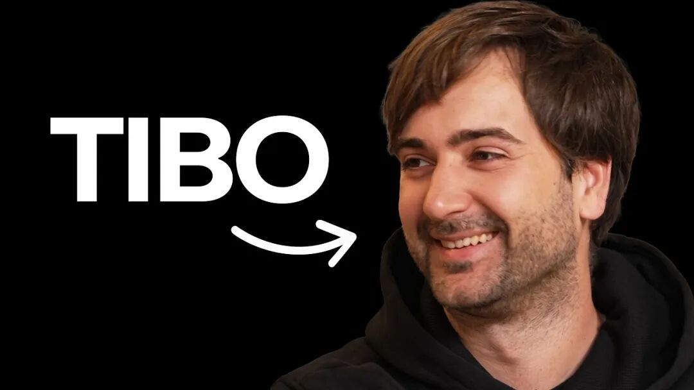
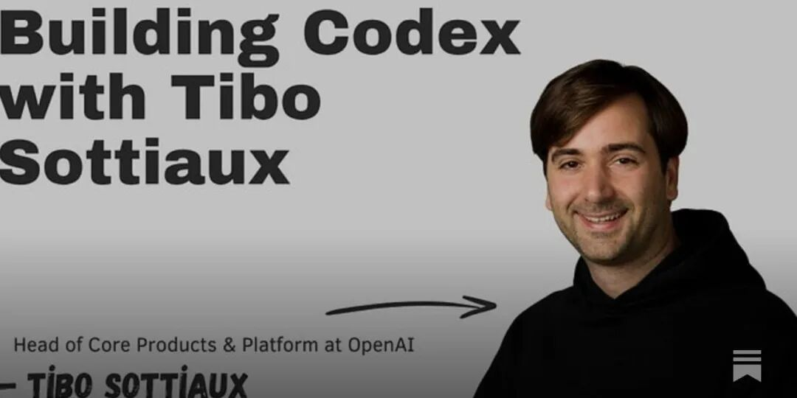

全网膜拜的重置卡之神Tibo亲自拆解：Codex如何在OpenAI长出来
来源：微信公众号 归档日期：2026-09-11 抓取状态：成功 原文字符：8820｜配图：2 张
摘要速览
- 介绍 Codex 在 OpenAI 内部的演进历程与核心设计理念。
- 分析 Codex 如何从内部工具演变为面向用户的编程 Agent。
- 强调“人机协作”在 Agent 开发中的关键作用。
核心内容
视频/文章回顾了 Codex 从最初的代码补全模型，到具备完整 Harness 的 Agent 系统的演变。重点介绍了 OpenAI 内部如何通过 Tibo 等工程师的实践，逐步构建出能够理解复杂项目、自主规划并执行任务的编程助手。
可执行启发
- 研究 Agent 的演进路径，从简单工具到复杂系统的过渡策略。
- 在产品设计中，保留“人工介入”的接口，平衡自动化与可控性。
- 关注 OpenAI 等头部实验室的工程实践，借鉴其架构思路。
归属：[[02-输入/按主题/工具与技术/_index|工具与技术]]
我的想法
（待补充）
原文沉淀
目录
- 带着二十人团队的震撼加入OpenAI，内部工具演变为独立产品
- 为什么顶着模型缺陷，也要坚持用Rust重构底层？
- 全面开源与支持竞品模型：不搞生态绑架，只靠硬实力竞争
- 框架外壳只是拐杖，终极目标是把外壳彻底删光
- 软件开发生命周期重构：人工代码审查正在被全面淘汰
- 绝密代号大合并：把本地极客工具塞进十亿人的ChatGPT
- 高管的工作日常：每天在手机上向Agent口述一切
- 给出路：普通工程师如何在AI风暴中立于不败之地？

↑阅读之前记得关注+星标⭐️，😄，每天才能第一时间接收到更新
Tibo，Codex产品负责人，Codex重置卡之神，Codex重置卡狂魔，会用中文回复网友好感度拉满的大神最新采访来了。
作为OpenAI核心产品与平台组织的负责人，Tibo Sottiaux统领着包括Codex在内的核心研发阵地。在Pragmatic Engineer播客的长篇深度对话中，他首次将Codex从零到一的诞生经过、技术架构选型内幕、OpenAI内部的软件开发生命周期重构，以及本地Agent与云端ChatGPT大合并的完整技术细节，毫无保留地全部公开。采访时长1个多小时

以下是核心要点
八岁迷上电脑的数学狂人，在DeepMind提前一年做出了“ChatGPT类型”聊天机器人，却胎死腹中
Tibo的工程思维，最早可以追溯到比利时布鲁塞尔郊外一个只有两百名居民的小村庄。
当年他的父母买下了一栋老房子进行翻新。在这个几乎没有同龄人交流的偏僻村落里，八岁的Tibo第一次接触到了计算机和互联网。网络成了他探索世界唯一的窗口，也彻底锁定了他一生的方向。
大学期间，Tibo在极短的时间内完成了应用数学专业的学业。他一边读书，一边为银行和大型机构提供数学咨询服务。
毕业后，他创办了一家利用应用数学解决供应链难题的技术公司，专门针对制药行业的临床试验供应链进行端到端优化。
通过蒙特卡洛模拟和多阶段随机优化算法，系统能够极其精准地预测药品消耗、调度产能，最大程度避免药品浪费。这套基于传统运筹优化算法的系统，后来还被成功应用在欧洲的钢铁工业和电网调度中。
将深奥的数学理论用于解决现实世界最棘手的效率瓶颈，成了Tibo贯穿始终的技术哲学。
2015年，Tibo加入谷歌伦敦团队。最初他参与了一个旨在提升移动端网页加载速度的广告技术项目，目的是对冲桌面流量向移动端转移造成的广告收入下滑。
团队攻坚了两年，解决了海量复杂的底层技术挑战。直到某一天，一位副总裁从加州总部飞抵伦敦，当场宣布取消整个项目。
原因非常直接：这个项目只有几百个实际用户，完全达不到谷歌要求的规模。
这次经历给了Tibo极其深刻的技术警醒：如果不去深入理解真实用户需求，如果不去建立极其紧密的反馈回路，即便底层的技术方案再漂亮，最终也会因为缺乏真正的产品市场契合度而归零。
离开该项目后，Tibo在谷歌地图短暂负责了评论系统，随后便义无反顾地加入了正处于黄金时期的DeepMind。
当时DeepMind凭借AlphaGo名震天下，内部充斥着对前沿科研的狂热追求。Tibo长期负责核心研究基础设施与工具链的搭建。
正是在这段时间，团队内部出现了一批坚信大语言模型潜力的研究员。大家开始激烈辩论：如果将海量文本语料推向极致，单纯依靠语言模型的无监督扩展，是否足以诞生通用人工智能？
为了帮助研究人员直观地调试大模型的输入与输出，Tibo与团队共同搭建了一套内部聊天交互系统。
这个系统比后来轰动全球的ChatGPT早诞生了整整一年。
它在DeepMind内部迅速引发了病毒式传播。所有研究员都在疯狂使用它，甚至每天在内网分享各种惊艳的对话记录。
团队当时极度渴望将这个系统推向外部市场，变成真正的商业产品。
但当时的谷歌拥有极其庞大且严密的标准化生产发布流程。这套为了保证超大规模系统稳定运行的流程，在面对颠覆性创新时表现出了巨大的摩擦力，导致这个划时代的原型最终没能在外部面世。
带着二十人团队的震撼加入OpenAI，内部工具演变为独立产品
眼看着外部AI浪潮以惊人的速度推进，Tibo做出了离开的决定。
他渴望加入一个将顶尖前沿研究与敏捷产品工程彻底焊死在一起的团队。
当他第一次与OpenAI团队深入沟通时，一个事实让他感到了前所未有的震撼：当时支撑ChatGPT这种全球现象级产品的工程团队，竟然只有区区二十名工程师。
二十个人，扛起了数亿用户的超大规模流量，同时还拥有极高的工程自主权。
2024年，Tibo正式加入OpenAI。当时公司正处于推理模型发布的前夕。Tibo入职后立即投身到高强度的闭门冲刺中，仅仅一个月后，OpenAI就正式向全球推出了o1与o1 preview推理模型。
也正是在这个阶段，Codex的雏形开始在内部生根发芽。
随着o1 preview展现出强大的逻辑推理能力，OpenAI的研究团队达成了一个强烈的共识：必须立刻使用模型自身来加速模型研发的进程。
Tibo与核心研究人员联合起来，开始专门训练内部模型。这些模型被灌入了大量OpenAI自身的Python代码库，被反复强化工程架构品味与代码风格规范。
这个早期的内部Agent完全专注于Python环境，目标只有一个：帮OpenAI的研究员们极速编写分布式训练所需的基础设施代码，让整个机构的研发迭代速度翻倍。
在内部跑通后，OpenAI联合创始人Greg Brockman和Sam Altman敏锐地指出，这种能力绝对不能局限在公司内部使用，必须将其打造成一款造福全球开发者的标准产品。
随后，这个内部研究项目与OpenAI原本代号为ASWE的自主软件工程师项目彻底合流。
团队在极短时间内推出了最初的云端Codex版本。但由于初期云端版本的使用摩擦力较大，团队迅速调整航向，推出了轻量、极速的Codex CLI命令行工具，自此拉开了这套代码智能工具横扫全球的序幕。
为什么顶着模型缺陷，也要坚持用Rust重构底层？
在Codex构建初期，团队做出了一个在当时看来极其反直觉的决定：底层核心完全抛弃Python和TypeScript，全面采用Rust重构。
在那个时期，主流大模型的预训练数据分布严重向Python和TypeScript倾斜，模型在生成Rust代码时的表现并不完美。
整个行业的大多数同类工具，为了迎合模型的能力现状，都选择直接在Python或TypeScript上搭建脚手架。
但OpenAI团队选择回归第一性原理。
在架构设计上，团队要求将产品前端交互界面与底层Agent核心引擎彻底剥离。
Agent的核心需要面对极其严苛的高并发、资源调度、极限制约以及内存安全考验。随着未来代码规模从单机脚本演变为支撑全球顶级数据中心的大型系统，底层的稳定性和执行效率具备决定性意义。
Rust拥有近乎严苛的静态类型系统和编译期检查机制。
只要代码能够通过Rust编译器的检查，其在并发安全和内存管理上的正确性就得到了数学级别的保证。
这种强类型和强静态校验的特性，不仅没有成为AI模型的阻碍，反而成了Agent最好的自检工具。模型在生成Rust代码时，能够借助编译器的详尽报错信息实现快速自我纠错。
更深层的考量在于工程架构的解耦。
如果前端界面和Agent引擎混用同一种脚本语言，工程师在后期开发中不可避免地会写出边界模糊的泥团代码，导致交互逻辑与核心推理逻辑深度耦合，最终彻底锁死后续的架构迭代空间。
用Rust在底层筑起一道清晰的技术防火墙，确保了Codex内核的极端纯粹与高效。
全面开源与支持竞品模型：不搞生态绑架，只靠硬实力竞争
在核心大模型领域，外界对OpenAI的代码开源策略一直存有讨论。但在Codex上，团队采取了极其彻底的开源路线：将CLI命令行、软件开发工具包SDK以及应用服务端全部开源。
这种决策背后有着极其浪漫的技术理想主义：Codex本质上是一个能够自我进化的代码编写Agent。
将它彻底开源，开发者就可以直接用Codex来阅读Codex的源码、修改Codex的缺陷、给Codex增加新的功能。让工具在自身的代码上反复迭代，能够形成最强大的技术反馈闭环。
开放不仅带来了极高的透明度，还彻底改变了团队的新人入职体验。
新员工入职OpenAI加入Codex团队的第一天，根本不需要繁琐的环境配置和文档培训。
他们在入职前就已经在GitHub上看过了全部提交记录和Pull Request。打开本地终端，让Codex直接带着新人通读仓库，第一天就能直接向主干分支提交生产代码。
当然，全面开源也带来了真实的商业代价。
在完全公开透明的开发模式下，OpenAI团队正在全力攻坚的最新功能和实验性设计，经常会被各路竞争对手直接抓取并在极短时间内复刻上线。
与此同时，开源社区每天也会涌入海量质量极低的自动化提交，团队必须耗费巨大的工程精力去清洗这些噪音。
但Tibo认为，身处正在被AI彻底重塑的开源世界，闭门造车是行不通的。想要定义下一代开发范式，就必须勇敢地站在暴风雨的最中心。
这种开放态度还体现在对竞争对手模型的全面包容上。
Codex并没有强行将自身绑定在OpenAI的模型接口上，而是原生允许开发者自由接入Anthropic等其他厂商的模型。
从技术实现来看，即便OpenAI强行做模型锁定，任何第三方开发者只需Fork一下代码仓库，修改十来行代码就能接入其他模型。这种防御性做法没有任何实际意义，只会徒增社区的维护割裂。
给予用户最充分的选择权，反而让OpenAI受益匪浅。
开发者可以根据任务场景，在同一个统一的工作流内随时横向对比不同模型的表现。
这种机制也在倒逼OpenAI内部团队时刻保持极度敏锐：我们必须在模型能力、推理效率、框架响应和整体产品体验上全面胜出。
依靠硬核的产品实力赢得用户，远比依靠封闭生态锁定用户更加持久和健康。
框架外壳只是拐杖，终极目标是把外壳彻底删光
在探讨AI开发工具时，行业内常常存在一个认知迷思：工具展现出的强大能力，究竟是来自于外部精心编写的脚手架框架，还是来自于模型本身的基底智能？
Tibo对此给出了一个极其精辟的工程定义：框架永远只是走在模型能力前面的临时拐杖。
当底层大模型的原生推理能力还不够完美时，工程师必须在框架层施加大量保护性措施。
通过精细编写的开发者系统提示词、多重沙箱限制、针对特定场景的工作流胶水代码，去强制纠正模型的行为，给它装上一副副外骨骼，确保它在执行任务时不偏离轨道、不出致命错误。
在早期版本的Codex中，用户如果要求它修改代码，它经常在改完后直接跳过测试用例。为了解决这个问题，工程师必须在系统提示词中不厌其烦地强调每次修改后必须主动运行单元测试。
但随着新一代基座模型在预训练和后训练阶段强化了对复杂意图的理解能力，模型开始主动意识到运行测试是验证自身代码正确性的内生必要步骤。
一旦模型具备了这种内生能力，团队在框架层写下的繁琐规则和冗长提示词就会被毫不留情地彻底清理。
随着模型版本的不断升级迭代，整个Codex的开发者提示词长度正在急剧缩减，外部脚手架代码也正在变得越来越薄。
在日常研发排期中，Codex团队与核心研究团队始终保持着极高频度的深度协同。
当团队发现当前系统在某个代码重构场景表现不佳时，他们首先会评估：这个问题如果在框架层修补需要多少成本？如果在下一个模型训练检查点中从底层根治需要多久？
如果研究团队明确表示一个月或三个月后的新模型能够完全原生解决该缺陷，工程团队就会果断放弃在框架层堆砌临时的补丁代码，而是静待模型能力的自然跨越。
此前为了让模型保持长时间专注于单一宏大任务而专门开发的斜杠goal指令，如今在新一代模型强大的多步骤自主规划能力面前，也正在逐步完成其历史使命，走向自然消退。
软件开发生命周期重构：人工代码审查正在被全面淘汰
在传统的软件工程体系中，无论是谷歌还是Meta，代码审查都被奉为保证系统质量、促进团队知识共享的最高圣殿。
在谷歌工作过的Tibo，对那种由语言规范专家和业务资深工程师组成的多重严格人工代码审查制度再熟悉不过。
但在如今的OpenAI，这种延续了数十年的开发范式正在被彻底粉碎。
在Codex立项早期，团队就与研究部门联合开发了专门用于代码审查的超强模型。
这些模型能够以远超人类极限的精细度，直接穿透三到四层深度的第三方依赖项，精准识别出由于底层第三方库文档写错、接口实际行为不一致所导致的隐形逻辑断裂。
这种由于依赖深度导致的隐蔽逻辑Bug，即便让人类顶级技术专家坐在屏幕前肉眼逐行排查数个小时，也很难被完整捕捉。
如今，这种深度代码审查能力已经被直接整合进OpenAI的日常主线模型中。在逻辑正确性检查和底层安全审计上，AI模型已经达到了超越人类专家的水平。
在OpenAI内部，所有提交的Pull Request都必须强制经过自动化AI安全审计系统的扫描。
只要系统发现可能存在安全隐患或越权漏洞，合并请求就会被直接自动拦截锁死。整个排查与阻断流程实现了一百全自动化，无需任何人介入。
当正确性验证、语法规范排查和安全性防线全部被自动化AI接管后，人类工程师在开发闭环中的角色发生了根本性的跃迁。
工程师不再需要把时间浪费在挑剔变量命名、格式对齐或者基础语法错误上。在代码合并请求下方的讨论区，人类唯一的聚焦点只剩下对业务真实意图的探讨。
这个功能为什么要做？这个系统意图是否真正契合产品的长期演进方向？
只要人类在架构边界上达成了一致，明确定义好整个黑盒系统的输入输出契约、资源消耗上限、数据访问权限和核心不变性约束，黑盒内部的具体代码实现哪怕被AI完全重写一百遍，人类也根本无需耗费精力去通读。
由于底层代码的编写与修正成本已经无限逼近于零，传统软件工程中最为痛苦的长期系统维护税，正在彻底烟消云散。
升级一个陈旧的第三方依赖版本，在过去可能需要一个工程师提心吊胆地改上整整一周；现在，AI能够在一两个小时内自动扫清整个代码库中所有的破坏性变更，顺滑完成全量适配。
对于原本动辄需要耗费团队数年时间、甚至常常导致系统彻底瘫痪的大型架构重构，现在借助Agent集群的高并发协作，几天之内就能完成从设计、迁移到全量验证的全部流程。
正如前不久加入OpenAI的知名开发者Peter Steinberger所言：优秀的工程师现在甚至可以完全不读具体代码，他们唯一需要死死握在手里的，是脑海中对系统顶层架构的控制力与模块化解耦的品味。
绝密代号大合并：把本地极客工具塞进十亿人的ChatGPT
在Codex的发展历程中，最具里程碑意义也最具工程挑战的事件，莫过于团队内部被称为大合并的秘密攻坚战：将原本运行在开发者本地终端里的Codex，完整植入到面向全球十亿级用户的ChatGPT云端架构中。
从系统架构来看，这两个产品此前存在于完全不同的两个平行宇宙。
ChatGPT是一个完全托管在云端、承载着全球海量并发请求的分布式服务系统，所有状态存储和算力调度都经过极致的规模化优化。
而Codex最初是一个完全依赖本地环境、直接操控本地文件系统和本地编译器的极客终端工具。
大合并的核心使命，是要在云端构建出一套极其安全、极度高效的轻量级虚拟化计算环境，让全球普通用户通过每月二十美元的ChatGPT Plus订阅，就能瞬间获得极其澎湃的专属计算资源。
为了在海量多租户环境下兼顾安全隔离与极致性能，团队采用了基于Kata容器的安全虚拟化架构。
每一个在云端触发的ChatGPT Work任务，都会在专属的安全沙箱内启动一个完整的Codex运行环境。
这个沙箱环境极其开放且功能齐备，不仅具备完整的互联网访问能力，还赋予了模型深度的系统操作权限。
用户甚至可以在提示词里要求ChatGPT在云端沙箱中安装Blender完成复杂的三维几何建模渲染，或者直接在沙箱内部编写代码训练另一个轻量级小模型。
为了将原本割裂的本地插件体系、工具库生态与ChatGPT现有的云端插件架构彻底缝合，工程团队在极短的时间内重构了大量底层中间件。
在这个极度激烈的合并攻坚过程中，Codex本身甚至客串起了团队内置战地记者的奇妙角色。
它全程潜伏在团队的每一个Slack讨论组和每一份技术决策文档中，忠实、客观地记录下了工程师们在接口命名、合并优先级、系统交互形态上的每一次激烈争吵与技术妥协，形成了一份详尽无比的内部决策编年史。
虽然现阶段系统仍然保留了Work模式的切换开关，但在OpenAI的技术路线图上，这种状态只是一个短暂的技术过渡期。
未来的终极形态，是将这种深度的Agent计算能力彻底融化在整个ChatGPT的基底之中，让每一个普通用户在任何交互终端上，都能无缝调用这种顶级水平的通用代码智能。
高管的工作日常：每天在手机上向Agent口述一切
作为统领众多核心业务的高管，Tibo的个人工作流已经全面转向了高度Agent化的极端形态。
他的日历排期常年密密麻麻，但他始终能够保持极其从容的工作节奏。这种惊人效率的根源，在于他把大量日常管理与分析工作彻底转交给了移动端的ChatGPT Work。
在每天清晨喝咖啡的间隙，或者在不同会议室穿梭的短暂碎片时间里，Tibo几乎不会打开电脑敲击键盘，而是全程对着手机使用语音进行密集任务布置。
他在云端Agent中配置了极其详尽的自定义指令集与专属技能树，深度适配他个人的信息接收习惯。
在短短三十分钟内，Agent能够自动穿透内部Slack的所有公共讨论、翻阅最新的开发文档、调取生产环境的底层指标日志，直接输出结构极其严谨的高管汇报简报、PPT框架或者技术可行性推演。
这个新功能上线后的真实用户情绪反馈如何？
生产环境某些冷门接口在过去一个月的调用量是多少，是否应当立即打上废弃标记？
某个跨部门攻坚小组目前的实际代码产出卡点究竟在哪里？
任何过去需要层层指派、耗费下属数天时间才能统计汇总的管理问题，现在的Tibo只需要对着手机口述几句话，系统就能在极短时间内把极其精准的分析报告呈现在他面前。
而在每一个难得空闲的周末，Tibo依然会保留自己对纯粹工程的热爱。
他会在清晨突发奇想构思一个全新的前沿产品交互原型，然后指挥Agent在短短几个小时内将前后端代码全部跑通，赶在周一前把一个可以实际交互把玩的产品Demo甩给核心团队进行讨论和批判。
通过AI工具把脑海中的构想在一天之内具象化，成了这个时代赋予开发者的最大特权。
给出路：普通工程师如何在AI风暴中立于不败之地？
当代码编写、Bug修复、依赖维护和安全审计都被AI以碾压级的速度全面接管，未来的软件工程师究竟该何去何从？
对于渴望在AI时代脱颖而出的开发者，Tibo基于OpenAI的用人标准，给出了两条极其深刻的核心建议。
第一，保持对底层系统运转机制的极端好奇心，疯狂训练自己极速理解未知复杂系统的底层能力。
虽然AI能够帮你解释代码、生成模块，但在面对超大规模分布式系统或者未知领域的核心瓶颈时，工程师必须具备强大的系统认知嗅觉。
遇到任何未知概念，永远要用刨根问底的心态去探究事物运行的本质原因，层层拆解底层的技术支柱。能够在一团乱麻的新系统和新代码库中以最快速度看清本质的人，永远是行业最抢手的人才。
第二，极度重视表达意图的清晰度，培养无可替代的架构品味。
在未来的开发语境下，写代码这项动作本身的重要性正在不可逆转地大幅稀释，而清晰定义问题的能力正在成为绝对的护城河。
你是否能够用最严谨、最简练的语言，向团队和Agent清晰阐明你究竟要达成什么业务目标？
你是否深刻理解你所服务的用户群体，能否建立起对优秀产品形态的极高审美与品味？
如果你无法清晰表达自己的系统设计意图，如果你对什么是优雅的架构、什么是糟糕的交互缺乏敏锐的鉴别力，你就不可能指挥好身后的Agent大军去完成伟大的软件工程。
正如Tibo在对话最后所展现的坚定信念那样：
软件工程的本质从来都不是机械地敲击键盘堆砌字符，软件工程的本质，是用最高效的工具去解决人类社会最复杂、最重要的真实问题。
当工具本身迎来了前所未有的智能飞跃，整个数字世界的疆界，才刚刚向真正的构建者们彻底敞开。
写在最后
Tibo这个人非常活跃，动不动就发codex重置卡，对网友反馈非常及时，也很亲和，技术能力与pr能力都是一级棒，只能说OpenAI挖到宝了，CC现在被打到满地找牙。
现在有个坏消息，OpenAI算力吃紧，ChatGPT pro不能订阅了，GPT-6 Astra 太火了，重置卡怕是悬了，不过希望Tibo重置卡还能继续发下去。
--end--
最后记得⭐️我，每天都在更新：如果觉得文章还不错的话可以点赞转发推荐评论
/...@作者：你说的完全正确（YAR师）
归属：[[02-输入/按主题/工具与技术/_index|工具与技术]]